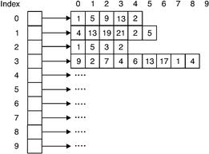

Caracteristicas Particulares
En JavaScript los arreglos pueden llegar a ser Heterogeneos esto es que pueden contener diferentes tipos de datos, no solo uno como en algunos lenguajes.
Otra caracteristica importante es llamada Jagged que sirve para hacer las filas de los arreglos de diferentes tamaños, es decir, no siempre tienes que hacer matrices cuadradas
Creacion
Para crear un arreglo vacio en JavaScript existen muchas formas pero aqui veremos dos principalmente:
- var arreglo= new Array()
- var arreglo= []
Metodos
En JavaScript existen métodos para los arreglos y están diseñados para ser aplicados generalmente a todos los objetos los cuales "se asemejan" a las matrices unidimensionales. Esto es, pueden ser utilizados sobre cualquier objeto que tenga una propiedad de length que indique la longitud y los cuales pueden ser útiles para ser accedidos utilizando nombres de propiedades numéricas
Algunos ejemplos son:
- concat() Con este metodo se concatenan 2 arreglos y de ahi se produce uno nuevo
- join() Une todos los elementos de un arreglo en una cadena
- push() Agrega un elemento al final del arreglo
- pop() Elimina el ultimo elemento del arreglo
- reverse() Regresa un arreglo con los elementos en orden invertido
- sort() Ordena los elementos de manera ascendente, tratandolos como cadenas
- shift() Elimina al inicio
- unshift() Inserta al inicio
- splice() Agregar o eliminar elementos en cualquier posicion
- slice() Extrae un subarreglo
- indexof() Busca en el arreglo y regresa el indice
Pagina Principal